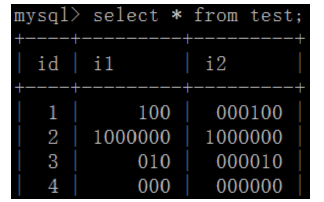

数据库理论--数据库表设计
数据库表设计的注意事项
[TOC]
- 1. 库表设计注意事项 主键设计
- 2. 库表设计注意事项 多表关系
- 3. 库表设计注意事项 逻辑删除与反范式
- 4. 库表设计注意事项 字段类型
- 5. 库表设计注意事项 索引
- 6. 库表设计注意事项 选择合适的引擎
1. 库表设计注意事项 主键设计
查看mysql-toutiao库的数据字典发现，在toutiao项目中，所有表全部使用自增主键
主键尽量不要使用业务字段：
- 数据和主键索引是绑定在一起的，业务字段更新平凡，一旦修改，索引也要跟着变
- 使用自增主键性能会快很多，主键自增就会让数据顺序添加到表中
2. 库表设计注意事项 多表关系
2.1 一对一
- 一张表的一条记录只能与另外一条记录进行对应，反之亦然
用户基础表user_basic == 用户信息表user_profile
2.2 一对多
- 一张表中的一条记录可以对应另外一张表中的多条记录，但是反过来，另外一张表中的一条记录只能对应第一张表的一条记录，这种关系就是一对多或者多对一的关系
用户基础表user_basic == 用户拉黑表user_blacklist
2.3 多对多
- 一张表中（A）的一条记录能够对应另外一张表（B）中的多条记录，同时B表找中的一条记录也能对应A表中的多条记录，多对多的关系
结论：在数据库设计的时候，当两张表存在多对多关系时，要设计第三张表：将2表多对多改为3表一对多
从业务逻辑上来说，
用户基础表user_basic和频道表news_channel是多对多关系，但是要借助用户频道表来帮助表达：
- 多对多：一个用户可以关注多个频道；一个频道可以有多个用户关注
- 建立用户频道表，每条数据都存放一个用户和该用户关注的一个频道；用户表不再存储关注的频道，频道表中也不再存储关注的用户
- 用户表中一条数据对应用户频道表中多条数据：一个用户关注多个频道，一对多
- 频道表中一条数据对应用户频道表中多条数据：一个频道对应多个用户，一对多

2.4 一表多用
两个表合为一个表，同时为2个业务逻辑服务：
对文章点赞表：文章ID 点赞用户ID
对评论点赞表：被点赞评论的ID 点赞用户ID
- 上边两个表合为一个态度表：目标ID 目标类型（文章、评论）点赞用户ID
- 可以根据具体业务逻辑，将多个表合为一个表来使用
- toutiao项目中
新闻文章表news_article_basic属于一表多用的情况：
- 可以把新闻和文章看做一类，它们都有共同的业务属性，所以也就有共同的字段
2.5 自关联
用户1对文章1发表了评论1，用户2对评论1发表了评论2，情况如下图：
2条数据在同一个 评论表news_comment 中，这种情况就是表中的数据发生了自关联
- 同一个表中的数据可以在逻辑上产生关联，这要根据业务实际情况
- 这是一种反范式设计

3. 库表设计注意事项 逻辑删除与反范式
为了查询效率，可以做冗余字段设计（空间换时间的思想，属于一种反范式设计），例如：
新闻频道表news_channel中的is_visible是否可见字段，以及其他表中的各种逻辑删除字段。
- 三范式设计，目的：减少冗余字段和重复的数据
- 字段具有原子性，不可拆分
- 依赖于全部主键，而非部分主键
- 比如某人的成绩，由班级+姓名决定，成绩完全依赖于班级+姓名，班主任的姓名只依赖于班级，不依赖学生姓名，所以，班主任不能在同一表中
- 只依赖于主键，非主键字段互不依赖
- 反范式设计，目的：满足业务逻辑要求，提高查询速度
4. 库表设计注意事项 字段类型
4.1 整型
int(n)
问题：int(3)和int(6)什么区别？
int(3), int(6), 都可以显示6位以上的整数。但是，当数字不足3位或6位时，前面会用0补齐。
结论：int的长度n并不影响数据的存储精度，长度只和显示有关

bigint(n)
多用于
主键
bigint(20) unsigned显示20位长度；unsigned表示没有符号，数字范围将更大
tinyint(n)
多用于
逻辑删除字段
tinyint(1)显示1位长度
4.2 字符串char与varchar的选择
- char 不可变，查询效率高，可能造成存储浪费
char(5) --> ' abc'不够5位，也用空字符串占位- varchar 可变，查询效率不如char，节省空间
varchar(5)-->'abc'不够5位，实际有多少就占多少位
4.3 json类型
mysql5.7版本之后
longtext类型新增了对json字符串的支持在toutiao项目中，
新闻文章表news_article_basic中封面cover字段采用了longtext类型：
- 把用于展示的1-3张图片的信息组装成一个json字符串，作为一个值放到了cover字段中
4.4 是否为空not null及默认值default
主键和被索引的字段不能为null：索引不存储null，查询时不会被统计。
对于字段一定不要忘了考虑其是否可以设置默认值
4.5 常见MySQL数据类型[查表]
类 型 大 小 描 述 CAHR(Length) Length字节 定长字段，长度为0~255个字符 VARCHAR(Length) String长度+1字节或String长度+2字节 变长字段，长度为0~65 535个字符 TINYTEXT String长度+1字节 字符串，最大长度为255个字符 TEXT String长度+2字节 字符串，最大长度为65 535个字符 MEDIUMINT String长度+3字节 字符串，最大长度为16 777 215个字符 LONGTEXT String长度+4字节 字符串，最大长度为4 294 967 295个字符 TINYINT(Length) 1字节 范围：-128~127，或者0~255（无符号） SMALLINT(Length) 2字节 范围：-32 768~32 767，或者0~65 535（无符号） MEDIUMINT(Length) 3字节 范围：-8 388 608~8 388 607，或者0~16 777 215（无符号） INT(Length) 4字节 范围：-2 147 483 648~2 147 483 647，或者0~4 294 967 295（无符号） BIGINT(Length) 8字节 范围：-9 223 372 036 854 775 808~9 223 372 036 854 775 807，或者0~18 446 744 073 709 551 615（无符号） FLOAT(Length, Decimals) 4字节 具有浮动小数点的较小的数 DOUBLE(Length, Decimals) 8字节 具有浮动小数点的较大的数 DECIMAL(Length, Decimals) Length+1字节或Length+2字节 存储为字符串的DOUBLE，允许固定的小数点 DATE 3字节 采用YYYY-MM-DD格式 DATETIME 8字节 采用YYYY-MM-DD HH:MM:SS格式 TIMESTAMP 4字节 采用YYYYMMDDHHMMSS格式；可接受的范围终止于2037年 TIME 3字节 采用HH:MM:SS格式 ENUM 1或2字节 Enumeration(枚举)的简写，这意味着每一列都可以具有多个可能的值之一 SET 1、2、3、4或8字节 与ENUM一样，只不过每一列都可以具有多个可能的值
5. 库表设计注意事项 索引
5.1 索引的优缺点
- 优点
- 增加查询速度
- 缺点
- 增加数据库的存储空间
- 减慢增删改速度(索引需要随之改变)
- 思考1：为什么索引会减慢增删改的速度？
- 思考2：为什么要读写分离？
5.2 索引
- mysql中广义索引包含以下：
- 主键primary key
- 外键foreign key
- 索引key/index（狭义的索引）
- 普通索引
- 唯一约束uniqu
- 联合索引
- 主键primary key 本身就是一个唯一索引（唯一约束unique）
bigint(20) unsigned NOT NULL AUTO_INCREMENT
- 无符号大数bigint(20) unsigned
- 不能为空NOT NULL
- 自增AUTO_INCREMENT
- 外键foreign key
ALTER TABLE tbl_name # 修改一张表 ADD [CONSTRAINT [symbol]] FOREIGN KEY # 增加一个外键约束，并给它一个自定义名称 [index_name] (index_col_name, ...) REFERENCES tbl_name (index_col_name,...) [ON DELETE reference_option] # 当删除时... [ON UPDATE reference_option] # 当更新时... # user_resource表中的user_Id与sys_user表中的Id关联 # 当在user_resource表中删除/更新一条数据时，从表sys_user中关联的数据随之删除/更新 ALTER TABLE `user_resource` CONSTRAINT `FKEEAF1E02D82D57F9` FOREIGN KEY (`user_Id`) REFERENCES `sys_user` (`Id`) ON DELETE CASCADE ON UPDATE CASCADE
建立外键的目的：保持数据的完整性，一表增删改，外键关联表随之变动
如果不做如下额外声明，创建的外键将无法删除或修改：
CASCADE
在父表上update/delete记录时，同步update/delete掉子表的匹配记录
- ON DELETE：删除主表时自动删除从表。 - ON UPDATE：更新主表时自动更新从表。SET NULL
在父表上update/delete记录时，将子表上匹配记录的列设为null (要注意子表的外键列不能为not null)
- ON DELETE：删除主表时自动更新从表值为NULL。 - ON UPDATE：更新主表时自动更新从表值为NULL。NO ACTION
如果子表中有匹配的记录,则不允许对父表对应候选键进行update/delete操作
- ON DELETE：从表记录不存在时，主表才可以删除。 - ON UPDATE：从表记录不存在时，主表才可以更新。RESTRICT
同no action, 都是立即检查外键约束
SET DEFAULT
父表有变更时,子表将外键列设置成一个默认的值 但Innodb目前不支持
toutiao项目中没有使用外键，而是通过代码实现外键逻辑
如果预估业务的数据量庞大，就不要使用外键了
仍然可以多表联查
删除、更新效率高
- 索引key/index（普通索引）
普通索引
create index idx1 on table1(col1)唯一约束unique（唯一索引）
user_basic表中对手机号moblie声明了唯一索引
- 保证数据不重复
- 唯一是指被建立索引的字段的值具有唯一性，对于一个已经存在的值，后续将无法写入相同值
联合索引（
对多个字段建立一个索引，目的是减少开销、提升效率
- 比如建立一个复合索引
create index idx1 on table1(col1,col2,col3)
- 覆盖索引：对列col1、列col2和列col3建一个联合索引，实际是建立了
(col1)、(col1,col2)、(col,col2,col3)三个索引- 最左原则：在mysql建立联合索引时会遵循最左前缀匹配的原则，即最左优先，在检索数据时从联合索引的最左边开始匹配。
- 在查询使用时,最好将条件顺序按找索引的顺序，这样效率最高。
select * from table1 where col1=A AND col2=B AND col3=D- 如果使用
where col2=B AND col1=A或者where col2=B将不会使用索引where col1 and col2能够使用索引
6. 库表设计注意事项 选择合适的引擎
mysql引擎：在mysql进程中，按照sql语句对数据进行增删改查的服务，mysql有多种引擎，常用的有InnoDB、MyISAM，其中最常用的是InnoDB
- 可以指定数据库使用哪个引擎，也可以在一个库的不同表上使用不同的引擎

6.1 InnoDB
mysql5.5开始，默认InnoDB，其特点如下：
InnoDB给MySQL提供了具有提交、回滚和崩溃恢复能力的事物安全（ACID兼容）存储引擎。
支持行级锁/表级锁
- 并发访问时效率高（事务和行级锁的原因）
- 数据恢复可使用事务日志(undo redo log), 恢复速度快
- 支持外键约束
- 插入/更新/主键查询快
- 需要内存和硬盘多，相较耗费资源
6.2 MyISAM
MyISAM特点：
- 不支持事务
- 不支持外键约束
- 只支持表级锁
- 批量插入/查询/count( )速度快
- 简单, 适合小型项目/以批量插入和查询为主的系统(内部管理系统)
toutiao项目中的
global_announcement系统公告表选择了MyISAM
- 因为基本不会修改, 不存在大量并发写操作, 也就不需要行级锁和事务为数据安全稳定做保障
- 查询多, MyISAM会更快